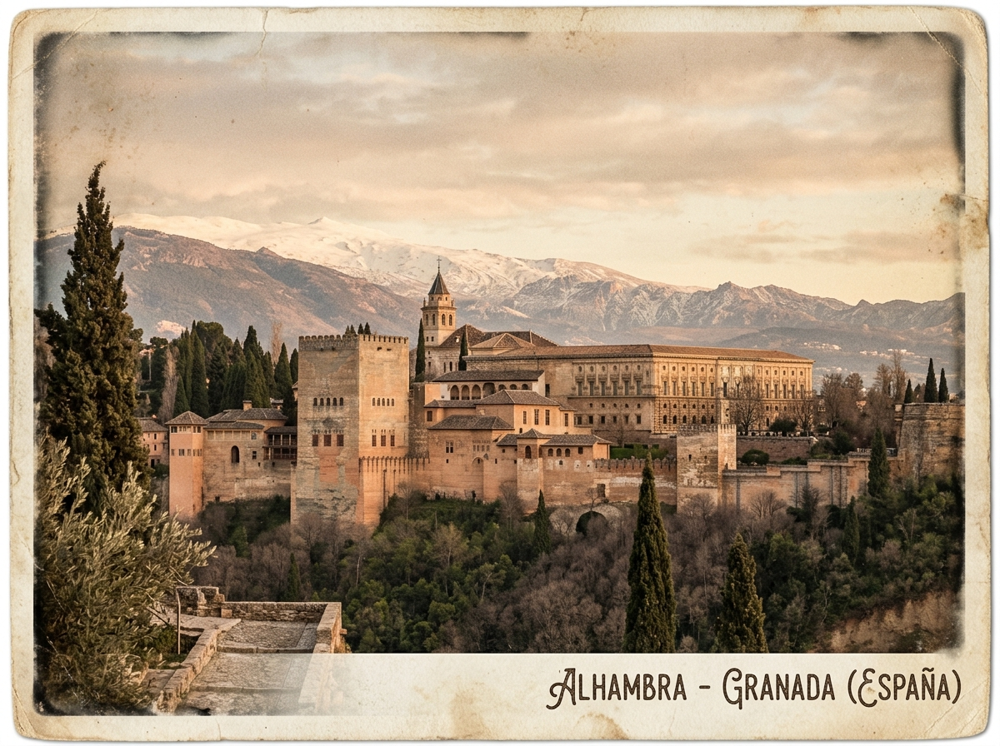
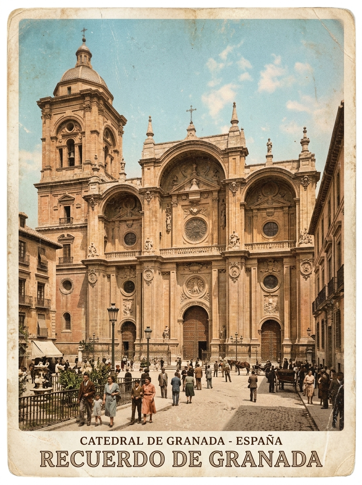
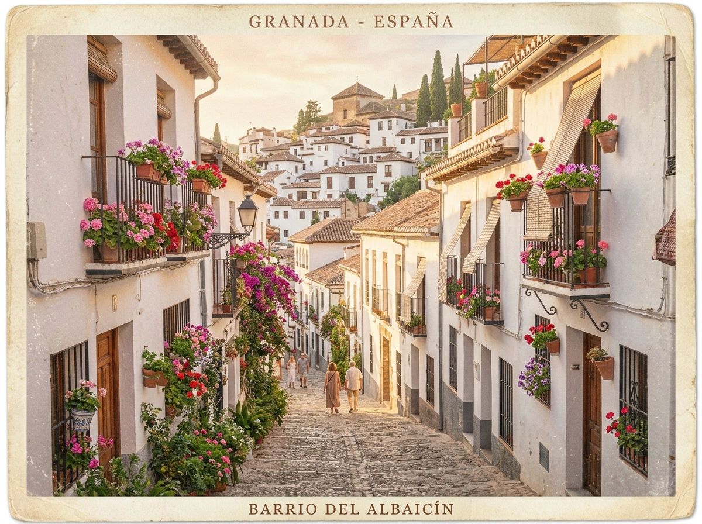
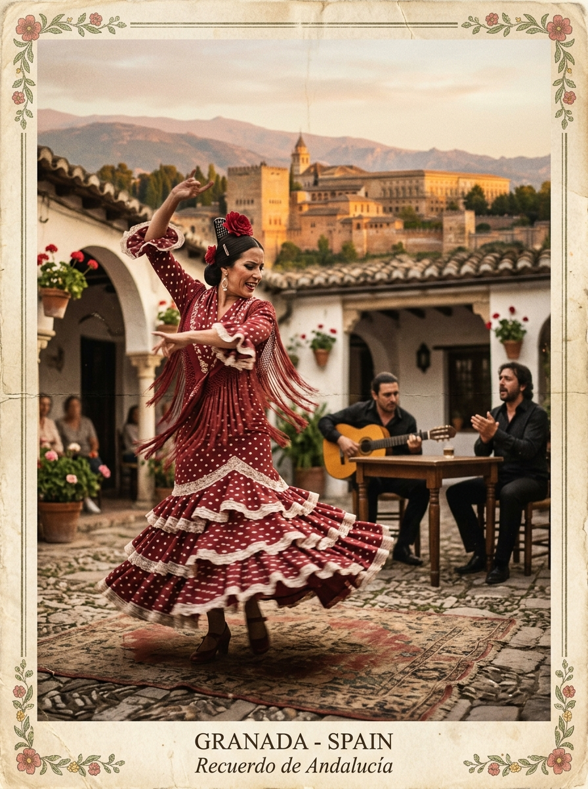
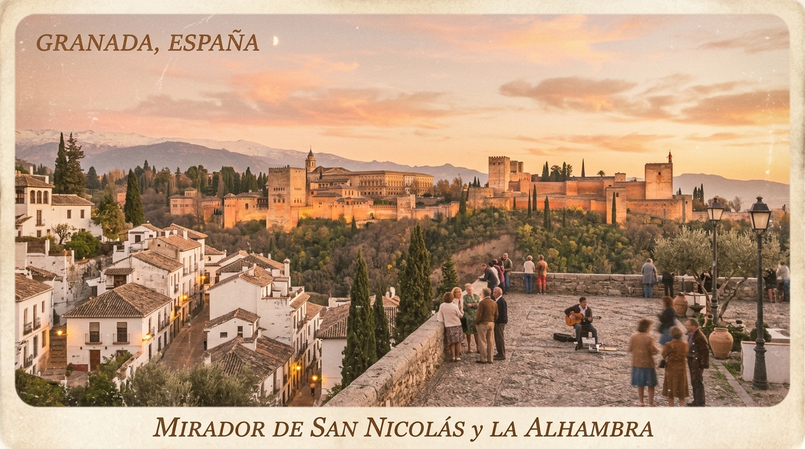
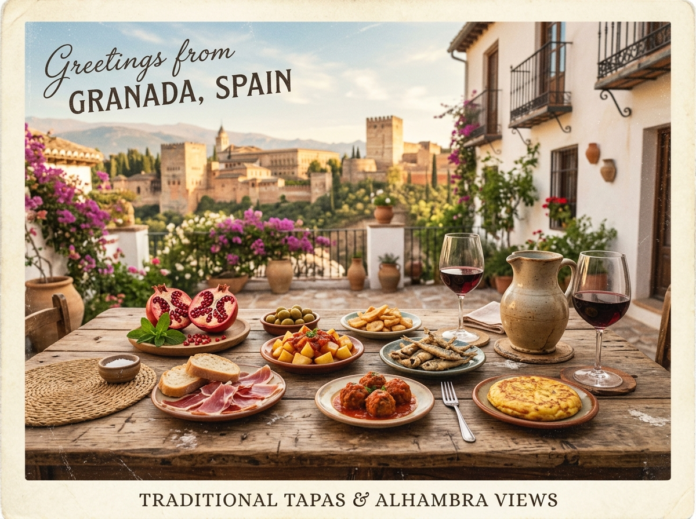

La Alhambra · Joya NazaríGranada
Recuerdos de Andalucía

Catedral de Granada
El Albaicín
Flamenco · Alma Gitana
Mirador de San Nicolás · Atardecer
Tapas & GranadasDale limosna, mujer, que no hay en la vida nada como la pena de ser ciego en Granada
Empezar